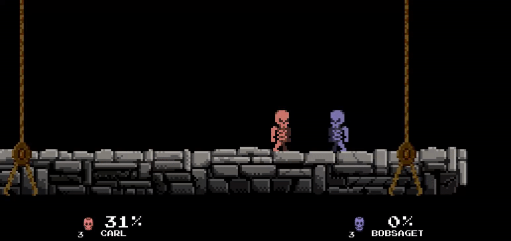

Intro
This was a 4 week project that I made together with 2 other programmers at my school. The main focus of the project was networking. Instead of using an engine where you can get all the networking functionality for free such as Unity or Unreal Engine 4, we decided instead to make our own engine from scratch using SDL2 and SDL_Net.
Systems
Since we didn't make the game in an already existing engine, we had to make everything from scratch. This was however exactly what we wanted, because we wanted to push ourselves and see how far we could get in 4 weeks, aswell as getting to make all the basic functionality from scratch lets us decided exactly how everything works under the hood.
Rendering
The rendering in the game consists almost entierly of sprites and texts, which are trivial to render with SDL2. So getting that to work didn't take long. What did however take a couple of days was figuring out how to implement the camera. Towards the end of the project we decided that it would be really neat if we could have some simple camera movements to make the game more dynamic. This however presented some challenges in the form of converting all our old position calculations to now be in camera space, this was solved using a function on the camera that looked like this:
Vector2 SNCamera::MakePositionWithCam(Vector2 oldPos)
{
Vector2 returnPos = oldPos;
returnPos = ScaleVector(returnPos, camScale);
returnPos = TranslateVector(oldPos, GetCenterPosition());
return returnPos;
}
With the GetCenterPosition() function looking like this:
Vector2 SNCamera::GetCenterPosition()
{
Vector2 camCenter;
camCenter.x = transform.GetPosition().x + (transform.GetScale().x / 2);
camCenter.y = transform.GetPosition().y + (transform.GetScale().y / 2);
camCenter = camCenter / engGetRenderScale();
return camCenter;
}
And the ScaleVector() and TranslateVector() functions working like this looking like this:
inline Vector2 ScaleVector(Vector2 vec, float scale)
{
SNMat3x3 mat =
{
scale, 0, 0,
0, scale, 0,
0, 0, 1
};
return MultiplyMat3x3Vec2(mat, vec);
}
inline Vector2 TranslateVector(Vector2 vec, Vector2 translation)
{
SNMat3x3 mat =
{
1, 0, translation.x,
0, 1, translation.y,
0, 0, 1
};
return MultiplyMat3x3Vec2(mat, vec);
}
Networking
As I said before, Networking was the main focus of this project. We used the SDL_Net library for this project, as it was a perfect fit for us since we didn't want a library that did too much of the work for us and we were already using SDL2 for rendering the game.
The way we sent data from the Server to the Client and vise versa was using a TCP peer-to-peer connection. All the data we sent were packaged in different types of DataPackets before being parsed and sent to the reciever, where we depending on what type(flag) of DataPacket was sent could interpret the data accordingly.
Here is an example of such a DataPacket. This is the DataPacket we used for sending different types of events from the server to the client, such as the game had started or the game had ended.
First we need a DataPacket that can hold the specific data we need, for the EventPacket, it looked like this:
struct SNEventPacket
{
Uint8 flag;
Uint8 eventFlag;
};
It is a very simple packet containing only 2 Uint8's. The first one called "flag" is used when the data is recieved to tell what type of DataPacket was recieved, and we can using that knowledge parse the incoming data correspoindingly.
This is how we Sent and Recieved an EventPacket:
void SNServer::SendData(SNEventPacket* data)
{
if (client == nullptr)
return;
Uint8 buffer[4];
int offset = 0;
memcpy(buffer, &data->flag, sizeof(Uint8));
offset += sizeof(Uint8);
memcpy(buffer + offset, &data->eventFlag, sizeof(Uint8));
SDLNet_TCP_Send(client, buffer, 4);
}
Uint8 recvData[20]; // sizeof largest packet
int len = SDLNet_TCP_Recv(tcpsock, recvData, 20);
...
case EVENT_FLAG: {
Uint8 retData[4];
memcpy(retData, recvData, 4 * sizeof(Uint8));
return retData;
} break;
...
case EVENT_FLAG: {
// Call Event
Uint8 event;
memcpy(&event, dataBuffer + sizeof(flags), sizeof(Uint8));
world->eventHandler.InvokeEvent(event);
return true;
} break;